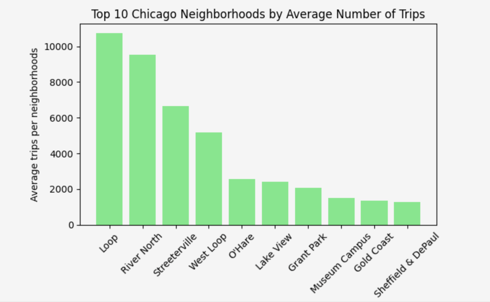

Sandra Milena Pinilla Bautista
Data Analyst | Business Analyst | Process Optimization
Transformo datos en decisiones estratégicas mediante Python, SQL y análisis de procesos.
Transformo datos en decisiones estratégicas mediante Python, SQL y análisis de procesos.
Ingeniera Industrial y Magíster en Calidad con más de 10 años de experiencia en análisis de procesos, KPIs y auditoría interna.
Actualmente me formo como Data Analyst en TripleTen, enfocada en Python, SQL, EDA, estadística y visualización de datos.
Propósito: transformar datos en decisiones de negocio basadas en evidencia.
Objetivo: analizar la demanda de taxis y el impacto del clima en la duración de los viajes.
Mi rol: Data Analyst (SQL + EDA + visualización + estadística)

Conclusiones:
Objetivo: validar hipótesis de negocio usando análisis estadístico.
Mi rol: Data Analyst (Hipótesis + análisis estadístico)

Conclusiones:
Email: samipinilla@gmail.com
Ubicación: Tunja, Boyacá, Colombia
GitHub: github.com/samipinilla-gif
LinkedIn: Perfil profesional